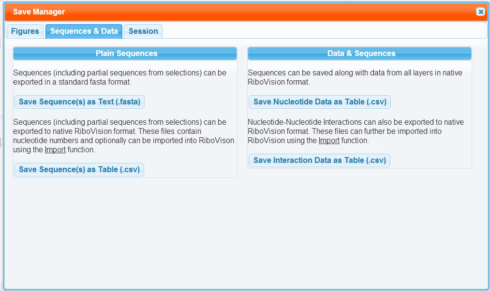

Sequences & Data can be saved to your computer though the "Sequences & Data" tab in the Save Manager. The Save Manager is opened through the button in the Save section of the Main Menu.
Sequences can be saved to your computer. We provide the sequences in two formats. There is the Table format, a CSV file, which contains the nucleotide numbers and the nucleotide letters. The whole sequence is provided. In addition, each of your selections are also provided in additional columns. These files can be opened in a spread sheet program, such as Excel, and further manipulated. Secondly, we provide FASTA format files. These don't include the nucleotide numbers, only the nucleotide letters. These are simple text files, and can be manipulated in most bio-informatic programs, along with most text editors.
The figure data can also be saved. All data loaded onto your 2D Panel can be saved in a CSV table file.